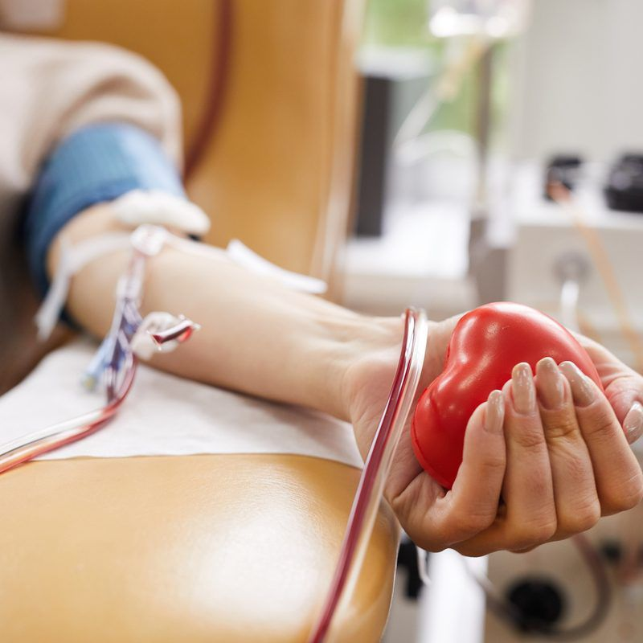

LifeLink brings together hospitals, NGOs, blood donation camps, and voluntary donors in one ecosystem to save lives through efficient blood donation coordination.

Active Donors
Hospitals
Blood Camps
Lives Saved
Our platform connects all stakeholders in the blood donation ecosystem for faster, more efficient emergency response.
Search for available blood donors and blood banks in your area within seconds.
Learn more →Discover nearby blood donation camps and schedule your donation appointment.
Learn more →post urgent blood requirements and connect with willing donors immediately.
Learn more →